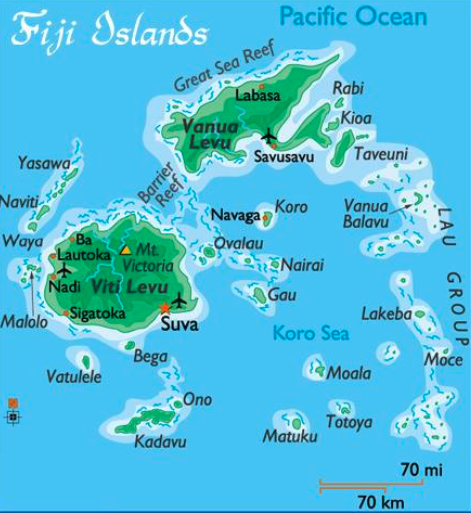
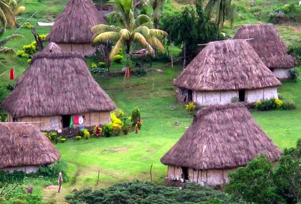
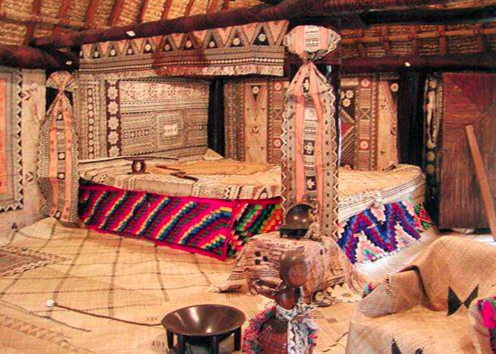
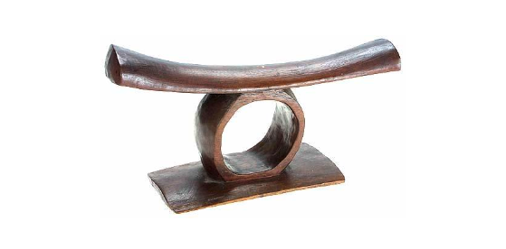
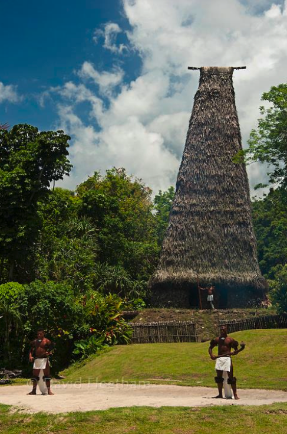
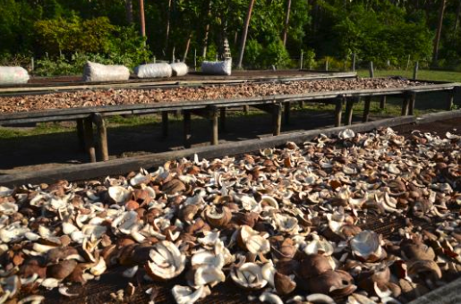
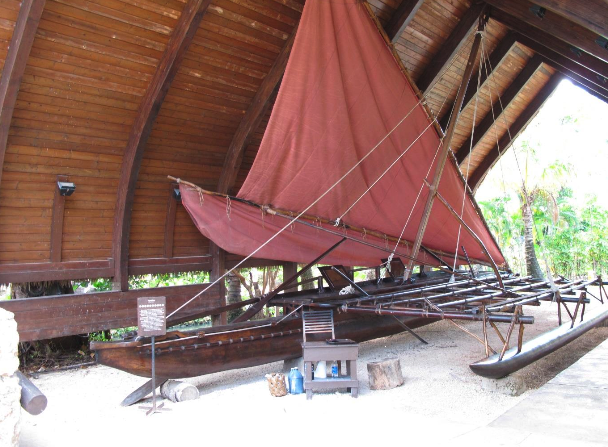

Greeting Word: Bula Vinaka
Current Population: 930,000
Location: Fiji straddles the International Date Line about 3,100 miles (5,100 km) southwest of Hawaii.
Size: The independent tropical nation covers approximately 7,050 square miles (18,270 km²) – slightly smaller than the U.S. state of New Jersey – and includes two major islands plus about 330 smaller ones, and more than 500 islets (tiny rock formations in the ocean that are unable to sustain human habitation).
The two main islands, Viti Levu & Vanua Levu, are rich in resources, including gold and copper mines.
Known: Crossroads of the South Pacific
Historically known as fierce warriors until soon after the paramount chief converted to Christianity in 1854.
The islands of Fiji are regarded as the “Crossroads of the South Pacific” , where Melanesia and Polynesia meet. Although it’s geographical location defines it as part of Melanesia, the language and cultural aspects of Fiji more closely relate it to Polynesia.
Other than New Zealand, the islands of Fiji are larger than the rest of the Polynesian groups. There are a little over 330 islands, 500 islets, and there are very distinct cultural differences from island to island. Because of the great distance covered by the islands of Fiji there are a number of dialects or distinct languages spoken by the various islanders. The Fijian language is made up of approximately 20 dialects and with the multi-racial makeup of the country today, English is used as the official language. Approximately one third of the islands are inhabited.
The first Europeans to land and live among the Fijians were shipwrecked sailors and runaway convicts from the Australian penal settlements. Dutch explorer, Abel Tasman, is credited with its discovery in 1643. Major credit for recording of the islands on modern maps went to Captain William Bligh who sailed through Fiji after the mutiny on the Bounty in 1789.
Great Britain ruled over Fiji from 1874 until 1970 when Fiji became an independent dominion and removed Queen Elizabeth II as the Head of State. There were other political disturbances in 1987, 2000, and 2006 while Fiji struggled to determine its future.. The population of Fiji is today close to 930,000 (87%) of which live on Viti Levu and Vanua Levu, the two main islands. Suva, the largest city and capitol, is located on Viti Levu.
About 40% of the people are descendants of laborers brought from India almost a century ago in the indentured labor system, as contract workers for the sugar cane plantations. 50% of the population is made up of indigenous Fijians. The remaining 10% is a mixture of other races, including Chinese and Caucasians.
The 20th century has brought important economic and political roles for Fiji. Fiji has been productive in its sugar industry, copra milling, and tourism. Today, Fiji plays a major role in regional affairs and is recognized as a focal point of the South Pacific.
The greeting of bula vinaka means more than just a simple hello. It literally means “Good Health” or “Good Life”. In ancient times as people entered a Fijian village area, the lali, or wooden drum, would ring out to announce the new arrival to the village.
BURE vs. VALE: Structures
There are two words that you will hear in Fiji referring to structures. One is bure and the other is vale. Bure denotes the style of building and also a building used irregularly but for a specific purpose. A vale denotes a structure used continually for domestic purposes, such as a family home, chief’s home etc. You will notice that in most of the Bure very little furniture is found. The use of furniture began as foreigners settled and brought other ways of life to Fiji.
BURE: Family Dwelling
This structure is a typical bure or house. Because Fiji consists of many islands over a wide area, house structures differ from location to location. The structures found here at the Polynesian Cultural Center are patterned after structures found in the Lau group of the islands of Fiji.
The Bure is constructed with layered reed walls lashed together with sennit. As in all Fijian structures, tapa cloth, or masi as it is called in Fiji, is dominant as decoration. The colors of Fijian masi are usually darker than in other Polynesian cultures. In ancient times, masi had specific patterns that indicated the area a designer came from. They often had genealogical significance for a family.
The roof is covered with a sugarcane leaf thatching. To keep the thatching free of insects or animals that would feed on the leaves, a fire is often built inside the building. The smoke rises into the thatching, forcing most animal life out of the leaves, similar to today’s fumigation methods. Fijian structures are usually constructed with very high- pitched roofs that allow for better air circulation inside and for the frequent Fijian rain to easily run off on the outside. The roofs have a life expectancy of ten to fifteen years depending upon the craftsmanship.
VALE LEVU: Chief’s House
A traditional Fijian village includes the chief's house, the largest structure and most elevated building, unless that village had a Bure Kalou (see ‘Bure Kalou’ section). The Chief’s house’s stature was further marked with white cowry shells, which you can observe hanging on the doors and at various locations, both inside and outside the house.
The front door in the east is the entryway for commoners and servants. The two side doors, facing north and south, are entryways for the chief's wife and family and visiting dignitaries. The back door, always facing the west, is reserved only for the chief himself. Anciently, armed warriors stood guard at the chief’s door, and any person other than the chief who entered through it was put to death. Today, the custom is still practiced, only without the warrior guards posted to enforce the protocol of tradition, since it is a given that Fijians should know the correct door through which to enter.
The chief’s bed is made of piled-up pandanus mats topped with tapa cloth. Frequently, a bamboo frame was utilized, again filled with layers of mats to ensure softness. The floor would have a layer of sand, covered with layers of dried leaves and soft branches, upon which would be piled layers of mats.
The headrest seen on the bed is a typical Fijian pillow to keep the head elevated above the body. This was necessary because the head was believed to be the location of the power of an individual. On a more practical level, the luxurious Fijian "hair do" necessitated that shape of headrest. The lower bed is for the chief's wife and children. If the chief practiced polygamy, the favored wife and her children slept there. The other wives were sometimes provided sleeping quarters. At the opposite end of the building, the chief would receive his guests and entertain them.
VALE NI BOSE: Meeting House
The Vale Ni Bose serves many purposes as it is used for ceremonial, official and private functions. Ceremonial uses include the welcoming of village chiefs, discussing of official matters and the holding of yaqona or kava ceremonies. During these meetings, women and children are forbidden in the building. The yaqona or kava is a ceremonial drink that was served at these meetings. The root of the kava, a plant of the pepper family, is dried and pounded into a powder, which is then mixed with water. This drink is found in most cultures of the Pacific. As late as the 19th century, young maidens prepared and served the kava to the elders of the village.
Women and children sometimes use this building as an arts and crafts center. The major art forms of Fiji are weaving, carving and pottery making. Using the leaves of the pandanus plant does most weaving. The thinner and closer the weaving, the more valuable the product was. Items woven include mats, baskets, fans, etc. The making of pottery in Fiji is a Melanesian influence dating back earlier than 1300 B.C. Pottery making was apparently known and practiced in Samoa and Tonga originally but was abandoned due to their lack of clay. Archaeologists have discovered bits of pottery as far east as the Marquesas.
Lali or drums were used for long distance communication. Through various rhythms a message could be sent. Today a lali is used much like a bell to call people to meetings or in time of emergency.In ancient times the lali was used during funerals and was beaten continuously, night
and day, until the funeral ended. Smaller lali are used to accompany singing and dancing. Another form of communication favored by the Fijian people is the conch shell. After a hole is cut in the side of the shell, it is played much like a horn. Fishermen would blow it when returning to the village, indicating a good catch.
DERUA:
Bamboo Percussion Activity
Ancient and modern Fijian people used the DERUA or bamboo log, to provide rhythm as accompaniment to music and dance. Holding a bamboo stick in each hand with the blocked end down, the various lengths were pounded on the ground to create pitch and rhythm. With each hit, the air within the hollow tube resonates, which results in a distinctive DERUA sound. The exact pitch or tone is based upon the length of the bamboo and not the diameter. It has been found that DERUA can be tuned in series with every 1/4 inch equaling a quartertone. The DERUA was a natural instrument in Fiji. Bamboo grows hollow with a block at each joint. Lengths of bamboo were cut just below a joint and all other blocks in the length were removed except the bottom one. All villagers could join in the fun and festivity by pounding the DERUA.
BURE KALOU: Fijian Temple
The Bure Kalou or spirit house was usually built on the highest mound in a village, even higher than the chief's house. Strings of buli vulavula, or white cowry shells, hung from the lore or the two fern stumps at the end of the highest point of the roof. The white cowry always indicated the highest form of respect. In the bure kalou, the village bete, or priest, would sit inside at the bottom of a long strip of masi, or white tapa hung from the ceiling of the structure. He was the only person allowed inside the spirit house. The priest was thought to be conversing with the ancestral god, through the long strip of masi. It was thought that in order to be successful in battle or leadership, the chief had to take food offerings and sacrifices to the bure kalou regularly and consult with the bete.
VALE NI KURO:
Cooking Structure
The Fijian underground oven is called LOVO, which is basically a pit dug in the ground in which wood and stones are placed for a fire. In other parts of Polynesia, it is known as an IMU or UMU. When the wood burns down and the stones reach a high temperature, the food, which has been wrapped in leaves to prevent scorching, is placed in the lovo. Ti leaves, breadfruit and banana leaves are most often used. More leaves are used to cover the wrapped food. The complete lovo is then covered with earth to seal the steam, which cooks and flavors the food. Fijian people eat many various fruits and vegetables, including breadfruit, sweet potatoes, bananas, tapioca, taro, and papaya. Fijians are also excellent fishermen and so their diet includes all forms of fish, shellfish, and other edible sea life. Wild pigs and chickens are plentiful throughout the islands of Fiji. When the first migrants arrived in the Pacific, they brought with them the pig and the dog from Asia. Other livestock such as cattle and horses were not introduced until as late as the 15th & 16th centuries.
Copra:
The coconut is the most versatile and useful of all Polynesian plants. Copra is the dried flesh of the coconut and used to be one of Fiji's major exports before it was surpassed by sugar cane production. To make copra, a coconut is opened and the flesh is left in the sun to dry. From the dried coconut, the rich oil is extracted. Both the fresh and dried flesh of the coconut is used in various ways. The coconut flesh can be grated into coconut oil and then used for candles, cosmetics, and soap or in cooking. The list of ingredients of many commercial products including prepared foods and cosmetics includes the use of the coconut as one of the main ingredients.
CAMAKAU: Fijian Canoe
Canoes played an important role in the lives of the Fijians; they were used for social purposes, economic reasons (trade) and for the most part political purposes. In times of war, canoes such as this were used in sea battles for ramming enemy canoes as well as transporting warriors to sites of land battle. Superior canoes conferred political
This is a Fijian Camakau (tha-ma-kau) or, a Fijian outrigger canoe. The Fijians are considered as some of the finest canoe builders in the South Pacific. This particular canoe was constructed on an island east of the main Fijian island group, known as KABARA. The men on this island were born craftsmen who were very skilled canoe builders. In Fiji there are four classes of canoes:
- Drua - which is a double hulled canoe, and the largest class of canoes.
- Takia - which is a smaller outrigger canoe with a dugout hull.
- Camakau - which is a larger outrigger canoe with a covered hull.
- Tabilai - a war canoe with thick ends used for ramming.
This particular canoe was built in 1985 and completed in just two months. After all the required rituals and tests, this canoe was shipped to Hawaii by the then Prime Minister of Fiji, Ratu Sir Kamisese Mara, who is considered by many to be the Founding Father of the modern-day Fiji. The island of Kabara where this canoe was built is part of the Lau group.
This camakau was built using both modern and traditional tools. The tree was felled in the forest and then moved to a convenient place, not too close to the village, where it was built. This historical event was recorded and documented for the nearby Brigham Young University – Hawaii. It was presented to PCC and BYU-Hawaii to be an educational tool for Pacific Island Studies majors.
One of the most unique features of a camakau is its ability to change direction without taking time to turn around. By merely adjusting the position of the sail, a camakau can go in the opposite direction without having to turn around like other sailing vessels. Canoes like this normally travel at speeds up to 8 – 9 miles per hour, but are capable of even greater speeds.
More than 30 different plant species were used in the construction of this canoe. For example, this canoe was built from a single 40 foot VESI LOG, or HEARTWOOD. The outrigger is made out of NOKONOKO (Ironwood). Typically, the CAMA (Tha-ma - outrigger) would be made from UTO (breadfruit tree). It is all lashed together with the MAGIMAGI or sennit rope braided from fibers of the coconut husk.
The owner of a camakau was usually a chief, a village or an extended family due to the expenses involved in owning a canoe, such as the many feast and presentations associated with the construction of such a canoe.
FIJIAN WEAPONS:
A little over a hundred years ago, the
Fijians were using many types of clubs.
Apart from the gadi, a small ornamental
club carried by correctly dressed
warriors and chiefs at peacetime
ceremonial occasions, all clubs were used
for war. They were therefore made of the
hardest woods, such as ironwood or vesi.
Many had fine linear carving on their
handles, designed by the individual
warrior who made and used the club.
The Iula were throwing clubs with short
handles and bulbous heads. These were
the most deadly Fijian clubs capable of
competing with revolvers in close
situations.
If the handle struck the victim first it could penetrate the flesh, the heavy head jack-knifing onto the victim even if the handle did not pierce him, thus dealing a crippling, if not finishing blow.
The cai or qata, the spurred or "gun stock" clubs (so-called because of their resemblance in appearance to rifle butts or stocks), are designed for cutting and disjointing blows. That of a rifle did not inspire their shape although they look similar to one, but rather by the shape of the “bird of paradise” flower. The waka or the root club had straight handles with a natural knot of roots at the end and were used to crush skulls easily.
Terms:
Abel Tasman – Dutch explorer credited with the European “discovery” of Fiji in 1643.
Bula Vinaka – Common Fijian greeting meaning “Good Health” or “Good Life.”
Bure – Traditional Fijian family dwelling constructed with reed walls and a thatched roof.
Bure Kalou – Spirit house or temple in a village used for religious rituals and ancestral communication.
Camakau – Fijian outrigger canoe used for transportation, trade, and warfare; notable for directional agility.
Colonial Period – Era during which Britain ruled Fiji (from 1874 until Fiji’s independence in 1970).
Conch Shell – Shell used as a horn for communication, such as signaling fishermen’s return or announcing events.
Copra – Dried coconut flesh formerly a major export; source of coconut oil and by-products.
Derua – Bamboo percussion instrument, struck on the ground to produce rhythms for dance and song.
Drua – Large double-hulled canoe class used in Fiji for long voyages and conflicts.
Fiji – Island nation in the South Pacific comprising over 330 islands and 500 islets.
Fijian Language – Collective term for the 20 or so dialects spoken across Fiji; English is official.
Fijian Weapons – Traditional war clubs such as iula, qata, and waka used historically in combat.
First Europeans – Shipwrecked sailors and escaped convicts who first lived with Fijians before formal colonial contact.
Gold & Copper Mines – Valuable mineral resources found on Fiji’s major islands, especially Viti Levu and Vanua Levu.
Great Britain – Colonial power that administered Fiji from 1874 until its independence in 1970.
Iula – Short-handled throwing club used in warfare by Fijian warriors for close-range attacks.
Kava (Yaqona) – Ceremonial drink made from the root of the pepper family, used in rituals and formal gatherings.
Lali – Wooden drum used in villages to announce arrivals, call meetings, or signal emergencies.
Lovo – Underground cooking pit where food wrapped in leaves is steamed between heated stones and earth.
Magimagi (Sennit) – Braided cord from coconut husk fibers used to lash and bind structures or canoes.
Masi (Tapa Cloth) – Bark cloth decorated with symbolic designs, used in Fijian dress, ceremonies, and art.
Melanesia & Polynesia – Cultural regions between which Fiji is a crossroads, sharing traits of both.
Pottery – Traditional craft in Fiji, with ancient origins and Melanesian influences.
Qata (Cai) – Spurred “gunstock” style club used for cutting and dislocating in warfare.
Ratu Sir Kamisese Mara – Founding Father and first Prime Minister of modern independent Fiji.
Suva – Capital and largest city of Fiji, located on the southeastern part of Viti Levu.
Vale – Word for a domestic house or home in Fijian, used for everyday living.
Vale Levu – Chief’s large house in the village, reserved for the chief, his family, and dignitaries.
Vale Ni Bose – Village meeting house where formal, social, and ceremonial events occur.
Vale Ni Kuro – Cooking structure or area where meals are prepared, often using the lovo method.
Vesi Wood – Hard, dense wood used in crafting weapons, tools, and canoe components.
Viti Levu & Vanua Levu – The two main and most populous islands in the Fiji archipelago.
Waka – Root club weapon with a natural knot used by Fijian warriors to deliver crushing blows.
Yaqona – Indigenous Fijian term for the ceremonial drink also known as kava.